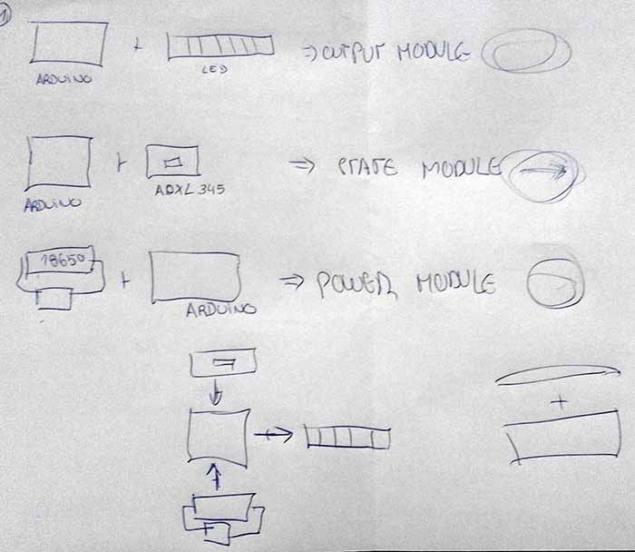
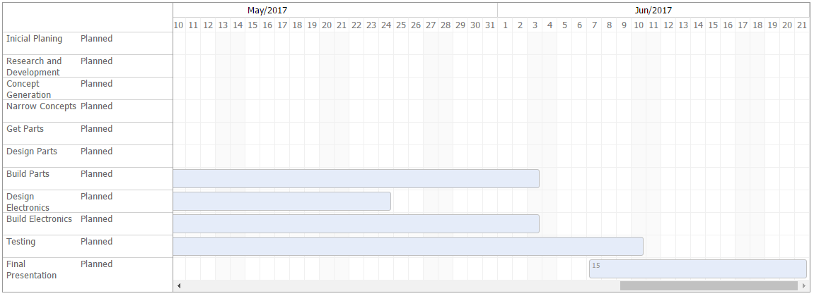

Week no. 17
Applications and Implications :
- propose a final project that integrates the range of units covered, answering the following questions:
Questions
What will it do?
It's a wireless bicycle brake light, it will detect the bicycle movement with the accelerometer input,
and that will activate the LED as you brake;
Who's done what beforehand?
This type of device is already found on the web:
https://www.kickstarter.com/projects/lucidbrake/lucidbrake-motion-sensing-press-on-bicycle-brake-l
https://www.bikerumor.com/2013/05/14/more-wireless-brake-lights-velodrooms-adaptive-bike-light/
What materials and components will be required?
This device will require usual electronic components like a 18650 battery, arduino mini,
MP1405 battery charger, NeoPixel LED Stick and accelerometer. For the case i will 3D printing it in pla.
Where will they come from?
The majority of items will be ordered overseas due to price constraints.
How much will it cost?
• Free - 18650 battery (recycled from an old laptop battery);
• 2.50$ - arduino mini;
• 1.00$ - MP1405 battery charger;
• 3.00$ - NeoPixel LED Stick;
• 2.50$ - Accelerometer.
• 2.00$ - Miscellaneous (pla, screws and wires)
Total: 10$
What parts and systems will be made?
This project started by being prototyped with the components mentioned behind, as you can see in the following image.

After the implementation of the purchased modules, the final goal is combine in a single board all this features,
by reducing size and costs.
What processes will be used?
Making accelerometer and led boards- Electronics / embedded programming/ input and output devices
Making the case - 3D aided design and 2d controlled cutting
What tasks need to be completed?
Assemble the battery module;
Assemble the accelerometer module;
Assemble the output (led) module;
Combine all in a single board;
Fabricate the case.
What questions need to be answered?
The most important question is if i'm capable of combine all this components in a single board,
produce the boards and program all of that by my self.
What is the schedule?

How will it be evaluated??
Evaluation will likely be based on tree parts.
The first will be the correct interaction between the electronics components, and casing.
Secondly will be the Strength and adaptability of materials.
Finally, the most important is to achieve the main goal: Turn me and my bike visible at night.